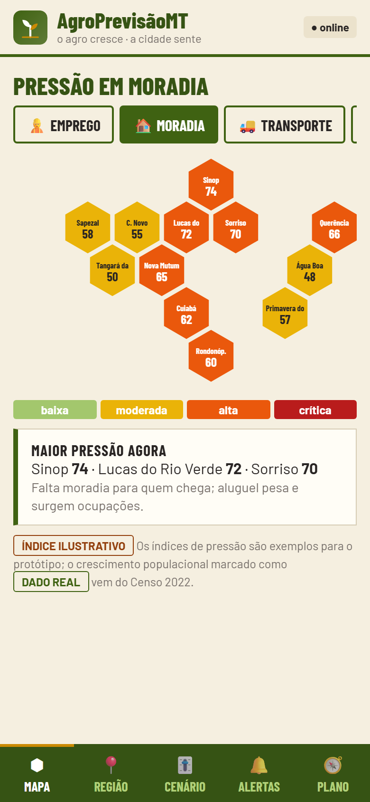
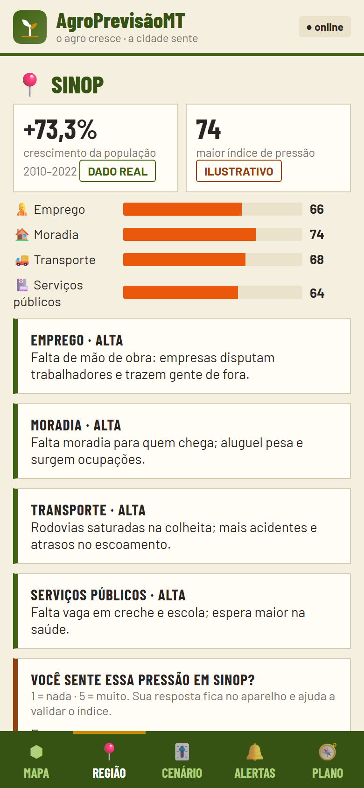
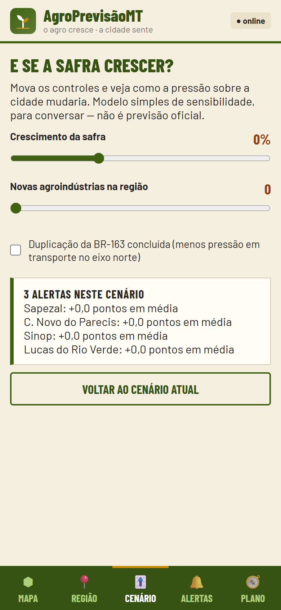

Um painel que antecipa a pressão do crescimento do agro sobre emprego, moradia, transporte e serviços nas cidades de Mato Grosso.
Grupo 1AgroPrevisãoMTProf. Heitor
Bruna da Cunha e Silva · Keila da Costa Campos · Yanni Gabrielli Stabilito do Espírito Santo · Célia Regina Dias de Almeida
A pergunta que move o projeto
Dá para saber que a cidade vai apertar antes de o gargalo aparecer?
O sinal está no agro. A consequência aparece no aluguel, no ônibus, na creche e no posto de saúde.
Se a resposta for sim, o município deixa de correr atrás do problema e começa a se preparar.
O problema não é opinião
Mato Grosso cresce no ritmo da safra. A cidade absorve o impacto.
56,2%do PIB de Mato Grosso vem do agronegócioObservatório/Sedec-MT, 2023
+105%Querência cresceu em população; Lucas do Rio Verde, +83,9%IBGE, Censo 2022
100 mil+moradias de déficit habitacional no estadoFundação João Pinheiro
50,6 mi tde soja na safra 2024/25, 30% da produção nacionalImea, 2025
Crescimento não é o problema. O problema é o descompasso entre a velocidade do agro e a da infraestrutura urbana.
Quem sente primeiro
Três pessoas, o mesmo descompasso.
M
Marina, 34
Professora em Sinop
Viu a cidade crescer 73% em uma década. Hoje disputa vaga na creche e vê o aluguel comer o salário.
Dor: a cidade cresce e ela descobre depois.
A
Seu Antônio, 58
Motorista no eixo da BR-163
Na safra, enfrenta fila de caminhões, frete incerto e mais acidentes no trecho.
Dor: o gargalo logístico chega sem aviso.
G
Gestora pública
Secretaria de Planejamento
Decide com dado do ano passado e com demanda que já chegou ao balcão.
Dor: quando o dado sai, a obra já chegou tarde.
A proposta em uma tela
De relatório atrasado para aviso antecipado.
Hoje
Dados espalhados em relatórios e planilhas
Indicador do ano passado para decidir agora
O gargalo só aparece quando já chegou
Morador não enxerga a conexão agro-cidade
→
Com o AgroPrevisãoMT
Um mapa por dimensão: emprego, moradia, transporte e serviços
Cenário “e se a safra crescer?” para conversar
Alerta por cidade e por dimensão
Todo número diz se é dado real ou simulação
Como funciona
Do sinal do agro ao alerta na tela.
1
Sinal do agro
Safra, emprego formal, renda e novas agroindústrias entram como entrada.
2
Índice por dimensão
O modelo estima pressão em emprego, moradia, transporte e serviços.
3
Alerta e cenário
O usuário vê a cidade crítica e simula o efeito de uma safra maior.



O que a pesquisa de campo disse
As pessoas querem previsão, mas ainda não ligam o agro à cidade.
4,43importância de o app ser vinculado a órgãos oficiais (Q20)n = 14 · escala 1–5
4,36utilidade de prever serviços públicos e alertas de transporte (Q11 e Q12)n = 14 · escala 1–5
4,29preferência por mapa e formato visual (Q13)n = 14 · escala 1–5
2,64conhecimento sobre onde as novas empresas do agro se instalam (Q3)n = 14 · escala 1–5
Hipótese parcialmente sustentada. O valor da previsão aparece com força, mas o reconhecimento da conexão agro-cidade ainda é baixo. O app precisa ensinar essa ligação, não só exibir o mapa.
Planejamento estratégico
Missão, visão e valores.
Missão
Antecipar o efeito do crescimento do agro sobre as cidades de Mato Grosso, para que gestores e moradores planejem emprego, moradia, transporte e serviços antes de o gargalo aparecer.
Visão
Ser a leitura de referência do impacto do agro na vida urbana mato-grossense até 2030, com dados abertos e linguagem que qualquer morador entende.